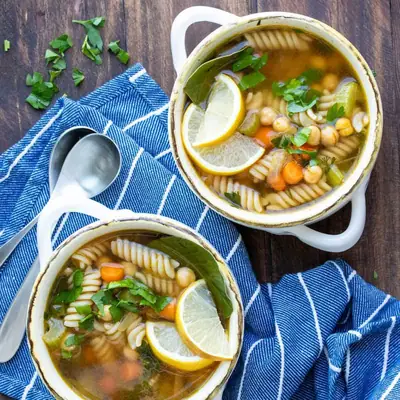

Vegan Chicken Noodle Soup

Ingredients
- 1 cup chopped sweet or yellow onion
- 1 drizzle oil (or broth, to saute)
- 1 cup chopped carrots
- 1 cup chopped celery
- 3 cloves garlic (minced)
- 2 tablespoons fresh parsley
- 1 tablespoon fresh dill (add more if you like dill)
- 2 bay leaves
- 1- 1½ teaspoons sea salt (start with 1 and add more if needed)
- ¼ teaspoon ground black pepper
- 8 cups veggie broth (low sodium if needed)
- 1½ cups cooked chickpeas (about one 15 ounce can)
- 2 tablespoons fresh lemon juice
- 1½ cups dry pasta (gluten free, if needed)
Steps
- Sauté onion over medium heat with oil or broth until soft, about 2-3 minutes.
- Add carrots, celery, garlic, parsley, dill, bay leaves, salt and pepper. Sauté until the carrots begin to soften, about 5 minutes.
- Add chickpeas, lemon and broth. Bring to a simmer and cook about 10-15 minutes.
- While the soup is cooking you can cook the pasta if you want to keep it separate.
- If you want to cook the pasta in the soup, then add it about 10 minutes in and cook until soft.
Recipe by Anjali Shah, from The Picky Eater. Saved here for personal use; the original has the full notes, tips and photos. Open original